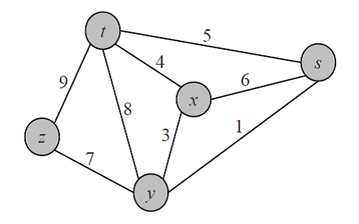
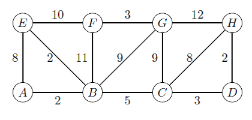
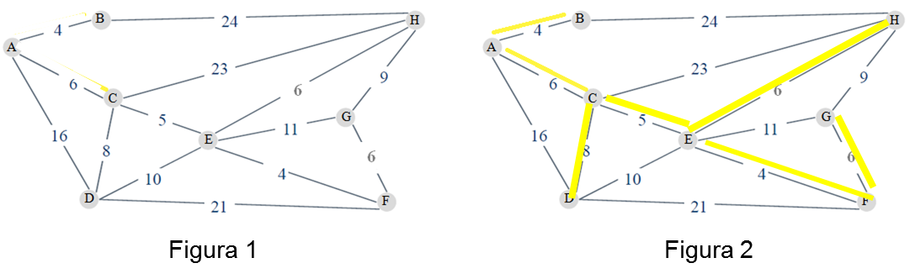

Saltar la navegación
¿Cuál de las opciones corresponde al conjunto de aristas del árbol abarcador mínimo resultante de aplicar el algoritmo de Prim al grafo de la figura ?
Opción 1
(t,s), (y,x), (y,s), (y,z)
Opción 2
(y,x), (y,s), (x,t), (y,z)
Opción 3
(x,s), (y,x), (y,s), (x,t)
Opción 4
(x,s), (y,x), (x,t), (y,z)
Incorrecto
Recuerde que la suma de las aristas debe ser mínima
Correcto. ¡¡ Felicitaciones !!
Recuerde que la suma de las aristas debe ser mínima y no se deben formar ciclos.
¿Cuál/es de las opciones corresponden a conjuntos de aristas obtenidos al aplicar el algoritmo de Prim al siguiente grafo?

{ (A,B), (B,E), (B,C), (C,D), (D,H), (C,G), (G,F) }
{ (A,B), (B,C), (C,D), (D,H), (C,H), (B,E), (G,F) }
{ (A,B), (B,E), (B,C), (C,D), (D,H), (B,G), (G,F) }
{ (A,B), (B,E), (D,H), (C,D), (G,F), (B,C), (B,G) }
Opción 5
Ninguna de las opciones anteriores
¿Cuál/es de las opciones corresponden a las secuencias en que fueron agregadas las aristas al árbol abarcador mínimo (MST), al aplicar el algoritmo de Prim al siguiente grafo, tomando el vértice A como raíz?
1.- Si se aplica el algoritmo de Prim a un grafo cuyas aristas tienen todas pesos diferentes, el conjunto de aristas resultantes es único.
Verdadero Falso
Verdadero
2.- El resultado de aplicar el algoritmo de Prim al grafo de la Figura 1 es el árbol abarcador mínimo de la Figura 2.
